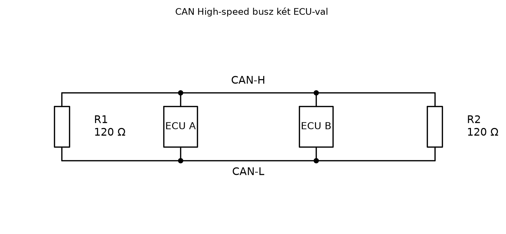
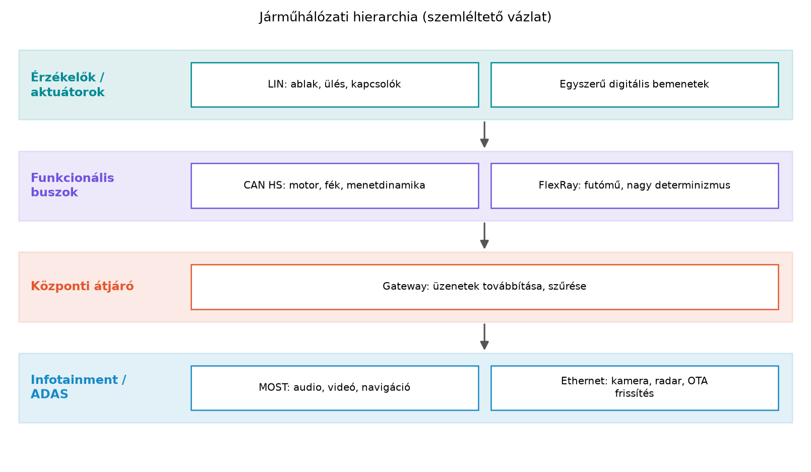

Egy mai autóban harminc–hetven elektronikus vezérlőegység (ECU) is dolgozhat: motorvezérlő, ABS, légzsák, műszeregység, klíma, ajtómodulok, kamerák, radar. Ha minden egyes jelhez – például a vízhőmérséklet, a kerékfordulatszám, a gázpedálállás – külön vezetéket és külön bemenetet kellene kihúzni, akkor a gépjármű kábelkötege több száz kilogramm és több kilométer vezeték lenne. Ráadásul minden új funkciónál újabb vezetékeket kellene tervezni, a csatlakozók száma megsokszorozódna, a hibakeresés pedig áttekinthetetlenné válna. A járművekben ezért a vezérlőegységek egy-egy közös adatátviteli rendszeren, buszrendszeren osztoznak: a jeleket digitális üzenetek formájában, címzéssel és hibakezeléssel továbbítják. A legismertebb és legelterjedtebb járműipari adatbusz a CAN (Controller Area Network), de mellette a komfort- és prémiumrendszerekben LIN, FlexRay, MOST és a gyorsan terjedő autóipari Ethernet is előfordul. Ahhoz, hogy a hibrid diagnosztikai, valamint a vezetőtámogató rendszerek kalibrálását és a fedélzeti diagnosztikát megértsd, először látnod kell a buszok felépítését és az adatátvitel alapjait.
Képzelj el egy hosszú, két eres, összesodort vezetékpárt, amely keresztülfut az autón az első fényszórótól a hátsó lökhárítóig. A vezetékpár két ágát CAN-High (CAN-H) és CAN-Low (CAN-L) néven jelöljük, a csavart érpár a mágneses zavarokat igyekszik kioltani. A busz mindkét végén egy-egy 120 Ω-os lezáró ellenállás ül a CAN-H és CAN-L között. A buszra több vezérlőegység csatlakozik, mindegyik egy CAN-kontrolleren és egy CAN-adóvevőn (transceiveren) keresztül. Amikor a motor-ECU elküldi a hűtőfolyadék-hőmérsékletet, a jel nem egyetlen vezetéken halad, hanem a két szál feszültségkülönbsége változik. A műszeregység ezt a különbséget figyeli, ezért a közös zavarófeszültség (például egy gyújtászaj) mindkét vezetéken egyszerre jelenik meg, és a különbségképzés kiejti. Ez a differenciális jelátvitel a CAN robusztusságának egyik kulcsa.
Definíció. Adatbusz a járműben olyan közös átviteli közeg, amelyre több elektronikus vezérlőegység csatlakozik, és amelyen digitális üzeneteket cserélnek meghatározott protokoll szerint. A busz nem csak a fizikai vezetéket jelenti, hanem a hozzá tartozó szabályrendszert (protokollt) is, amely meghatározza, ki mikor beszélhet, milyen formátumban és mi történik hiba esetén.
Definíció. Differenciális jelátvitel esetén az információt nem egyetlen vezeték földpotenciálhoz képest mért feszültsége, hanem két vezeték feszültségkülönbsége hordozza. A CAN esetében a vevő a értéket figyeli; a nagy abszolútértékű különbség domináns, a nulla körüli recesszív bitet jelent.
Definíció. Gateway (átjáró) olyan csomópont, amely különböző buszrendszerek között továbbítja, szűri, adott esetben konvertálja az üzeneteket. Például a motorfordulatszám a hajtáslánci CAN-ról a komfort-CAN-ra vagy a LIN hálózatra a gatewayen keresztül jut el.
Definíció. Arbitráció a CAN-ben az az eljárás, amellyel több egység egyidejű adási kísérletekor a hálózat eldönti, melyik üzenet kapott jogot az adat továbbítására. A CAN esetében ez bitenként, az azonosító mezőben történik: a domináns bitet adó üzenet nyer, a vesztes pedig azonnal vétel üzemmódba vált.
A buszrendszerek megválasztása mindig kompromisszum: a gyors, determinisztikus és hibatűrő rendszerek drágák, az olcsóbb buszok viszont lassúak vagy kevésbé megbízhatóak. A következő táblázat a legfontosabb jellemzőket foglalja össze.
| Busz | Jellemző adatsebesség | Topológia | Költségszint | Jellemző alkalmazás |
|---|---|---|---|---|
| CAN High-speed | 125 kbit/s – 1 Mbit/s | kétvezetékes busz | alacsony | hajtáslánc, fék, menetdinamika |
| CAN Low-speed | 125 kbit/s | kétvezetékes, hibatűrő | alacsony | komfort, ajtómodulok |
| LIN | 19,2 kbit/s | egyvezetékes, master–slave | nagyon alacsony | ablakemelő, ülés, kapcsolók |
| FlexRay | 10 Mbit/s | kétcsatornás, busz/csillag | magas | futómű, x-by-wire, hajtáslánc |
| MOST | 150 Mbit/s (MOST150) | optikai gyűrű | magas | multimédia, infotainment |
| Ethernet | 100 Mbit/s – 1 Gbit/s | csillag, switch | változó | kamera, radar, OTA frissítés |
Az értékek tanulási példák (ellenőrizendő: aktuális szabványkiadás és gyártói adat).
Összefüggés. A busz kiválasztásakor a fő szempontok: a szükséges átviteli sebesség, a determinizmus (a válaszidő garantálhatósága), a hibatűrés, a kábelezés költsége és a tömeg. A lassú, de olcsó LIN a nem időkritikus komfortfunkciókra ideális, a gyors FlexRay a x-by-wire rendszerekhez, a nagy sávszélességű Ethernet pedig a kamerás- és radaros vezetőtámogató rendszerekhez kell.
A CAN High-speed (HS-CAN, ISO 11898 – ellenőrizendő: aktuális kiadás) a járműhajtás és a menetbiztonsági rendszerek leggyakoribb busza. Fizikailag két, egymáshoz csavart, árnyékolatlan vagy árnyékolt vezeték alkotja: a CAN-H és a CAN-L. A csavart érpár csökkenti a külső elektromágneses zavarok behatolását, mert a zavar többnyire közös módusú feszültséget indukál mindkét szálban, amit a különbségképzés kiejt. A busz nagy sebessége ellenére (akár 1 Mbit/s) a hosszúság és a sebesség összefügg: rövid, néhány tíz méteres járműhálózaton az 1 Mbit/s elérhető, nagyobb hossz esetén kisebb sebességet kell választani.
A busz lezárása a két végén – és csak a két végén – egy-egy 120 Ω-os ellenállással történik (2 × 120 Ω). Ez az ellenállás a csavart érpár hullámimpedanciájához igazodik, és megakadályozza, hogy a jelfrontok a busz végéről visszaverődjenek, ami torzítaná a jelet. A két párhuzamosan kapcsolt lezáró ellenállás egyenáramú ellenállása épp 60 Ω: ha tehát a gyújtás kikapcsolása és megfelelő várakozás után a busz CAN-H és CAN-L ága között ellenállást mérünk, ép hálózaton körülbelül 60 Ω-ot kell kapnunk (a tényleges érték típusonként eltérhet, ezért a gyártói javítási adat az irányadó). Ha csak 120 Ω-ot mérünk, akkor valamelyik lezáró ellenállás hiányzik vagy szakadt; ha ennél sokkal kisebbet, akkor rövidzár vagy több lezáró ellenállás van a hálózatban.
A következő kapcsolási rajz a CAN-hálózat fizikai felépítését szemlélteti: két vezérlőegység csatlakozik a buszra, a CAN-H és CAN-L vezeték a két végén 120 Ω-os ellenállással van lezárva.

Az ECU A és az ECU B rövid leágazással csatlakozik a buszra (mindkét vezérlő adóvevője a CAN-H és a CAN-L vezetékre is); a 120 Ω-os lezárások a busz két végén vannak. A valódi járműben a lezáró ellenállás gyakran az ECU-n belül van, ezért a rajzon látható „külön” ellenállás a kábelkötegben nem mindig található meg (ellenőrizendő: gyártói rajz).
A CAN-adóvevő a digitális jeleket a következő módon alakítja feszültségszintekké: nyugalmi (recesszív) állapotban mindkét vezeték körülbelül 2,5 V-on van (a közös módusú feszültség), így a differenciális feszültség . Domináns bitnél a CAN-H körülbelül 3,5 V-ra emelkedik, a CAN-L pedig körülbelül 1,5 V-ra süllyed, így a különbség lesz. A vevő oldalon az adatot tehát nem a testhez, hanem egymáshoz képest kell mérni. Ha például egy zavar mindkét vezetéken +1 V-ot emel, a recesszív szintből 3,5 V és 3,5 V lesz, a különbség pedig továbbra is 0 V – ezért a CAN nagyon zavartűrő.
Számítás. Ha domináns bitnél
és
,
akkor
Recesszív bitnél
és
,
tehát
.
Ez a kettes számrendszerbeli
és
megfeleltetése (domináns = logikai
,
recesszív = logikai
a CAN keretben).
A CAN klasszikus adatkerete a következő fő részekből áll: SOF (start of frame, a keret kezdete), azonosító (identifier, standard esetben 11 bit, kiterjesztett változatban 29 bit), vezérlőmező, amely az adatbájtok számát (DLC) és a formátumjelzőket tartalmazza, adatmező (klasszikus CAN: 0–8 bájt), CRC ellenőrzőösszeg, ACK nyugtázó mező, és EOF (end of frame). A CAN FD (Flexible Data-rate) további fejlesztése nagyobb adatmezőt (gyakorlatilag 64 bájtig, ellenőrizendő: aktuális ISO 11898-1 kiadás) és az adatfázisban nagyobb bitsebességet tesz lehetővé, miközben az arbitrációs fázis lassabb marad a kompatibilitás miatt.
Az arbitráció során az azonosító mező bitjeit minden adó egyszerre küldi, és egyszerre figyeli a buszt. Ha egy adó recesszív bitet írna, de a buszon domináns bitet lát, akkor elveszítette az arbitrációt, és azonnal vételi módba kapcsol. Mivel a domináns bit a logikai , és a busz bitértékét a domináns határozza meg, az alacsonyabb numerikus értékű azonosító élvez prioritást. Például ha a motor-ECU üzenetének azonosítója (azaz 256 decimálisan), az ABS üzeneté pedig (240 decimálisan), akkor az ABS üzenet nyer, mert 11 biten , ; az első eltérő bitnél (balról a 3.) az ABS domináns -t küld, a motor-ECU recesszív -et, ezért a motor-ECU elveszíti az arbitrációt.
Az ábra (a) részén látszik, hogy domináns bitnél a két vezeték szétválik (3,5 V és 1,5 V, ), recesszív bitnél mindkettő 2,5 V-on van. A (b) rész a busz „huzalozott ÉS” viselkedését mutatja: a busz szintje minden bitnél a domináns 0, ha legalább egy adó 0-t küld; az az adó, amely 1-et küld, de 0-t lát a buszon, kiesik. Az interaktív változatban az arbitráció bitenként léptethető, és saját hexadecimális azonosítók is kipróbálhatók.
A LIN (Local Interconnect Network) egy egyvezetékes, master–slave busz, jellemzően 19,2 kbit/s sebességgel. A LIN-hálózaton egy master egység ütemezi a kommunikációt, a slave-ek csak válaszolnak. A LIN olcsó, ezért az ablakemelők, tükrök, esőszenzor, ülésállítás, kapcsolópanelek és hasonló, nem időkritikus komfortfunkciók hálózata. A LIN jele nem differenciális, hanem egyetlen vezetéken a járműtesthez képest változik, így zavartűrése kisebb, mint a CAN-é. Nyugalmi (recesszív) állapotban a LIN-vezeték az akkumulátorfeszültség közelében van (a master felhúzó ellenállása miatt), domináns bitnél a test közelébe húzzák; multiméterrel forgalom közben az átlag az akkumulátorfeszültség és a test közötti érték, oszcilloszkóppal kb. 0–12 V közötti négyszögjel látható (ellenőrizendő: gyártói adat). A LIN-t sokszor egy CAN-ról kapott gateway-en keresztül érik el.
A FlexRay nagy sebességű (10 Mbit/s), determinisztikus, hibatűrő busz, amelyet elsősorban a futómű, x-by-wire és nagy biztonságkritikus hajtáslánci rendszerek használnak. Két független csatornával és időosztásos ütemezéssel dolgozik, így garantálható, hogy egy üzenet adott időn belül célba ér. A FlexRay fizikai rétege is differenciális, és gyakran csillagtopológiát használ aktív hubokkal. A költsége magas, ezért a tömegpiaci autókban ritkább, a prémium és a biztonságkritikus alkalmazásokban viszont elterjedt.
A MOST (Media Oriented Systems Transport) elsősorban optikai szálas gyűrű, amely a multimédia- és infotainment-rendszerek nagy sávszélességű összeköttetésére szolgál. A MOST150 már 150 Mbit/s sebességet érhet el, és az audio-, video- és navigációs adatok átvitelére optimalizálták. Az optikai szál immunis az elektromágneses zavarokra, nem sugároz, de a csatlakozók és a szálak kezelése gondos munkát igényel, és a törés, szennyeződés azonnal hibát okoz.
Az autóipari Ethernet az utóbbi években terjed leginkább a vezetőtámogató rendszerek (ADAS) kameráinak, radarjainak és a fedélzeti szoftverfrissítés (OTA) adatforgalmának kiszolgálására. A szabványos Ethernet a hagyományos irodai hálózatból származik, de a járműipari változat egyetlen csavart érpáron is működik (100BASE-T1, 1000BASE-T1), ami csökkenti a kábel súlyát és költségét. Az Ethernet csillagtopológiát használ switch-ekkel, jól skálázható, és lehetővé teszi a TCP/IP protokollcsalád használatát, ami a gyártói és diagnosztikai kommunikációt is modernizálja.
A buszhálózat topológiája azt írja le, hogy a csomópontok milyen elrendezésben kapcsolódnak egymáshoz. A CAN alapvetően busz topológiájú: minden résztvevő ugyanarra a közös vezetékre csatlakozik, a busz végein lezárásokkal. A LIN többnyire egyvezetékes busz vagy kis csillag, a FlexRay busz vagy csillag, a MOST gyűrű, az Ethernet pedig csillag. A gyakorlatban a modern járművekben több különböző busz létezik egymás mellett, és ezeket gateway köti össze. A gateway lehet külön vezérlőegység, vagy egy meglévő egység (például műszeregység, komfort-ECU) része. A feladata, hogy az egyik buszról érkező üzenetet a másik buszra átemelje, szűrje és konvertálja; ezen keresztül éri el a diagnosztikai műszer is a különböző hálózatokat. Ha a gateway nem működik, egyes alrendszerek közötti kommunikáció megszakad, bár a lokális buszokon az adatforgalom még fennállhat.
A következő rétegábra a járműhálózati hierarchiát szemlélteti: alul az olcsó érzékelő/aktuátor szintek, felette a funkcionális buszok, majd a központi gateway, végül a nagy sávszélességű infotainment és ADAS hálózatok.

A CAN-hálózat ellenőrzésekor a három leggyakoribb művelet a lezáró ellenállás mérése, a differenciális feszültségek mérése multiméterrel, valamint az oszcilloszkópos jelalakvizsgálat. Fontos, hogy a vezérlőegységek csatlakozóinak bontása és mérése előtt a gyújtást ki kell kapcsolni, a gyártói várakozási időt be kell tartani, és a gyártói rajz alapján kell azonosítani a CAN-H, CAN-L és a testpontokat. A mérés során a csatlakozókat óvatosan kell kezelni, hogy a sérülékeny tűk ne hajoljanak meg.
Biztonsági korlát. A feladat tanműhelyi környezetre, oktató felügyeletére és a gyártói javítási utasítás betartására vonatkozik; a megadott értékek tanulási példák. A gyújtás kikapcsolását és az akkumulátor lekötését a gyártói eljárás szerint, a hibrid és elektromos járművek nagyfeszültségű rendszerére vonatkozó előírások betartásával kell végezni (ha releváns).
Gyakorlat. A lezáró ellenállás ellenőrzéséhez a járművön keresd meg a CAN-busz legkönnyebben elérhető csatlakozóját, általában a diagnosztikai csatlakozó közelében vagy a gyártói kapcsolási rajz szerint. Kikapcsolt gyújtásnál mérd meg multiméterrel a CAN-H és a CAN-L közötti ellenállást. Ép hálózaton a várt érték körülbelül 60 Ω (két 120 Ω párhuzamosan), de a gyártói előírás ettől eltérhet. Ha 120 Ω-ot mérsz, az egyik lezárás szakadt vagy hiányzik; ha nagyon alacsony értéket, akkor rövidzárra vagy harmadik lezáró ellenállásra gyanakodj. A mérés után győződj meg arról, hogy a csatlakozókat visszaillesztetted.
Figyelem. A CAN-hálózaton multiméterrel feszültséget mérni csak a gyártói áramútrajz és a megfelelő mérési pontok ismeretében szabad. A buszvezetékeket tilos testre vagy tápfeszültségre kötni, mert a vezérlőegységek megsérülhetnek.
Egy szervizbe érkezik egy személygépkocsi azzal a panasszal, hogy a műszeregység időnként nem mutatja a hűtőfolyadék-hőmérsékletet és a motorfordulatszámot, a hibakódmemóriában pedig kommunikációs hibák találhatók a hajtáslánci CAN buszra vonatkozóan. A járművön a hajtáslánci CAN csatlakozóját megkeresve a gyújtás kikapcsolása után a CAN-H és CAN-L között 120 Ω-ot mérünk, nem pedig a várt 60 Ω-ot. Ez arra utal, hogy az egyik 120 Ω-os lezáró ellenállás hiányzik vagy szakadt. A gyártói rajz szerint az egyik lezárás a motor-ECU-ban, a másik egy jobb oldali csatlakozóházban található. A csatlakozóház megbontásánál kiderül, hogy az egyik tű korrodált, és a lezáró ellenállás nem érintkezik. A csatlakozó tisztítása, a tű kicserélése és a csatlakozóház rögzítése után az ellenállásmérés már 60 Ω-ot mutat. A hibakódok törlése és próbaút után a műszeregység ismét megbízhatóan dolgozik. A hiba gyökere a korrózió okozta szakadás volt; a lezárás hiánya a jelvisszaverődések miatt adatvesztést okozott.
Hiba. A technikus a testhez mért CAN-H vagy CAN-L feszültségből (multiméteres átlagból) az üzenetforgalom épségére következtet. A testhez mért feszültség (jellemzően kb. 2,6 V a CAN-H és kb. 2,4 V a CAN-L vezetéken forgalom közben; ellenőrizendő) a zárlatok – testzárlat, tápzárlat, CAN-H–CAN-L zárlat – felismerésére jó, a bitek és a keretek vizsgálatához azonban kétcsatornás oszcilloszkóp kell, amelyen a két jel tükörképe és a különbségük is látszik; a vevő a két vezeték különbségét értékeli.
Hiba. A lezáró ellenállás mérésénél a busz feszültség alatt vagy túl korán, a kondenzátorok kisülése előtt mérnek, így a mért érték torz. Mindig a gyártói utasítás szerinti nyugalmi állapotban és megfelelő várakozási idő után mérjünk.
Hiba. A CAN, LIN és FlexRay buszokat összekeverik, mert mindegyiknek van „CAN-jellegű” diagnosztikája. Pedig fizikai rétegükben és protokolljukban alapvetően eltérnek; a LIN egyvezetékes, a FlexRay kétcsatornás, időosztásos, a CAN pedig arbitrációs. A hibát az áramútrajz és a gyártói besorolás figyelmen kívül hagyása okozza.
1. feladat (A). Definiáld röviden az adatbusz, a differenciális jelátvitel és a gateway fogalmát.
2. feladat (A). Számítsd ki a CAN-H és CAN-L közötti differenciális feszültséget domináns bitnél, ha és . Recesszív bitnél pedig és .
3. feladat (B). CAN arbitráció: az A vezérlőegység azonosítója , a B egységé . A harmadik C egységé . Az adás előtt mindhárom azonosító bitfolyama elindul. Add meg, milyen sorrendben kapnak adásjogot, és indokold.
4. feladat (B). Egy CAN-hálózaton a két lezáró ellenállás mindegyike 120 Ω. Rajzold le a busz felépítését vázlatosan, és számítsd ki a CAN-H és CAN-L közötti várható egyenáramú ellenállást. Ha ez a 60 Ω helyett 80 Ω-ot mérsz, milyen hibára gyanakodhatsz?
5. feladat (C). Magyarázd el, miért okoz a hiányzó lezáró ellenállás a nagysebességű CAN buszon adatátviteli hibákat, még akkor is, ha az ellenállás értéke csak egy passzív elem. Milyen fizikai jelenség játszik szerepet?
6. feladat (D). Hibakeresés: egy járműben az egyik komfortrendszer (LIN buszon) nem kommunikál a masterrel. A LIN busz feszültsége testhez képest 0 V, a tápellátás 12 V jelen van, a slave egység csatlakozója ép. Milyen további mérést vagy ellenőrzést végeznél, és mi lehet a hiba?
Önellenőrzés – válaszok
1. feladat megoldása. - Adatbusz: közös átviteli közeg, amelyre több ECU csatlakozik, és digitális üzenetekkel, meghatározott protokoll szerint kommunikál. - Differenciális jelátvitel: az információt két vezeték feszültségkülönbsége hordozza; a közös zavarófeszültségek kiesnek. - Gateway: átjáró, amely különböző buszrendszerek között továbbítja, szűri, esetleg konvertálja az üzeneteket.
2. feladat megoldása. Domináns bitnél:
Recesszív bitnél:
3. feladat megoldása.
A CAN azonosító numerikus értéke alapján dönt, minél kisebb a
hexadecimális érték, annál nagyobb a prioritás.
-
(672 decimálisan) a legkisebb, így C nyer először.
- Ezután
(752 decimálisan) B nyer.
- Végül
(768 decimálisan) A kap adásjogot.
A sorrend tehát: C, B, A.
4. feladat megoldása.
A busz vázlata: CAN-H felső vezeték, CAN-L alsó vezeték, bal és jobb
végén egy-egy 120 Ω ellenállás a két vezeték között.
A két párhuzamos ellenállás eredője:
Ha 80 Ω-ot mérünk:
esetén az egyik ág
,
vagyis az egyik lezáró ágban kb. 120 Ω-mal nagyobb az ellenállás a
vártnál (átmeneti ellenállás korrodált csatlakozónál, sérült vezeték
vagy nem megfelelő értékű lezáró ellenállás;
).
Párhuzamos szivárgási ellenállás az eredőt csökkentené, nem növelné; ha
az egyik lezárás teljesen hiányzik,
mérhető. A két lezárást külön mérjük (az egyik végpont ECU-ját vagy
csatlakozóját leválasztva az ép ágon 120 Ω), így azonosítható a hibás
ág. A pontos diagnózishoz a gyártói rajzot kell követni.
5. feladat megoldása.
A CAN busz nagysebességű jelátvitele során a jelfrontok gyors
felfutással terjednek a csavart érpáron. A vezetékpárnak
hullámimpedanciája van, a lezáró ellenállásnak ehhez kell illeszkednie,
hogy a jel reflektálódását megakadályozza. Ha a lezárás hiányzik, a jel
a busz végéről visszaverődik, a visszavert hullám torzítja a jelfrontot,
sőt feszültségtúllövéseket okoz, amit a vevő hibás bitként értelmezhet.
Ezért a hiányzó lezáró ellenállás passzív alkatrész, de a rendszer
szintjén fontos szerepet játszik a jeltisztaság megőrzésében.
6. feladat megoldása.
A LIN busz feszültsége testhez képest 0 V, a tápellátás 12 V jelen van.
Normálisan a LIN-vezetéken kb. 12 V (nyugalmi szint) vagy 0–12 V közötti
négyszögjel mérhető; a tartós 0 V testzárlatra vagy a master felhúzó
ágának/tápjának hibájára utal. Ellenőrizni kell a LIN vezeték
szempontjából a testhez való rövidzárat vagy a szakadást. A master
oldali és a slave oldali csatlakozón meg kell mérni a LIN jelvezeték
ellenállását a testhez képest; ha 0 Ω-ot mérünk, akkor rövidzár van. Ha
a vezeték szakadt, akkor a slave nem kap jelet; ezt folytonosságméréssel
lehet ellenőrizni. A hiba lehet a LIN-jelvezeték szakadása vagy
testzárlata, ami meggátolja a kommunikációt.
Az adatbuszok a modern jármű üzenetváltó gerincét alkotják, mert a pont-pont vezetékezés tömegét, költségét és bonyolultságát drasztikusan csökkentik. A CAN High-speed a differenciális jelátvitelre épül: a vevő a CAN-H és CAN-L közötti feszültségkülönbséget értékeli, így a közös módusú zavarok kiesnek. A busz mindkét végét 120 Ω-os lezáró ellenállással kell illeszteni a csavart érpár hullámimpedanciájához; a hiányzó vagy rossz lezárás jelvisszaverődést és adatvesztést okoz. A CAN-keretben az azonosító egyben prioritást ad: az arbitráció során az alacsonyabb azonosítójú üzenet nyer. A LIN olcsó, egyvezetékes master–slave hálózat; a FlexRay időosztásos, redundáns, nagysebességű busz; a MOST optikai gyűrű a multimédiához; az autóipari Ethernet pedig csillagtopológiás, nagy sávszélességű megoldás a kamera-, radar- és OTA-adatokhoz. A gateway az eltérő buszok között továbbít és szűr. Továbbvitt eredmény: a CAN fizikai rétegének ismerete – a csavart érpár, a 2 × 120 Ω-os lezárás, a differenciális feszültségszintek és a domináns/recesszív logika – közvetlenül szükséges a Buszhibák és az adatbusz-hálózatok diagnosztikája, a Vezetőtámogató rendszerek és kalibrálásuk, valamint a Fedélzeti diagnosztika: OBD és EOBD alfejezetekben.
Forrástípusok: ISO 11898 szabványsorozat (CAN fizikai és adatkapcsolati réteg), LIN-specifikáció (LIN Consortium), FlexRay-specifikáció (FlexRay Consortium), IEEE 802.3 (Ethernet), MOST-specifikáció, gyártói diagnosztikai és javítási útmutatók, MSZ EN 60617 / IEC 60617 rajzjelek, DIN 72552 kapocsjelölések. A konkrét értékek – a buszsebesség, a lezáró ellenállás értéke, a CAN-feszültségszintek, a CAN-FD adatmező hossza – szabványkiadástól és járműtípustól függően változhatnak, ezért a pontos tervezési vagy mérési adatokat a gyártói javítási utasításból és az aktuális szabványkiadásból kell ellenőrizni. A példákban szereplő hibakódok, azonosítók és hibatünetek tanulási célúak, nem valós mért adatok.